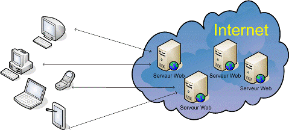
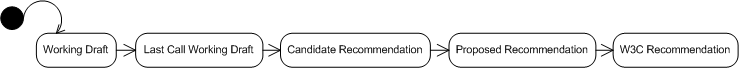

Le serveur web :
Définition :
Le serveur web qui reçoit la demande répond par l'envoi de la ressource concernée. Dans notre exemple, le serveur web renvoie la page d'accueil (index.html). Lorsque le navigateur de l'utilisateur reçoit la ressource, il l'affiche à l'utilisateur. Le HTML contenu dans la page web indique au navigateur ce qu'il doit savoir pour afficher le contenu de la page.
Le serveur Web est en écoute sur un port, généralement le 80.
Le client et le serveur échangent des donnéessous forme textuelle au travers de requêtes-réponses. Le protocole HTTP est dit non-orienté session (on parle de protocole sans mémoire) dans la mesure où la connexion entre le client et le serveur est coupée après chaque paire prequête-réponse. La notion de sessions devra, si elle est nécessaire, être implémentée au-dessus du protocole HTTP. HTTPS est la version sécurisée du protocole HTTP. Il utilise TLS2 (Transport Layer Security, anciennement SSL) pour le transport.
Un serveur HTTP ou démon HTTP ou HTTPd (HTTP daemon) ou (moins précisément) serveur web, est un logiciel servant des requêtes respectant le protocole de communication client-serveur HTTP, qui a été développé pour le World Wide Web (www).
Le serveur web est un serveur qui attend en permanence les requêtes des navigateurs web. Il doit fonctionner continuellement sinon le site Internet est hors service. Lorsqu'il reçoit une requête, il recherche l'élément demandé (page HTML, image, film, ...) et le renvoie au navigateur.
HTTP :

HTTP est le protocole de communication utilisé entre un client Web (généralement un browser1) et un serveur Web dans une architecture Client/Serveur.
HTTP permet à des PC, des Mac, des smarthphones et à tous les appareils connectés de surfer sur Internet. HTTP (HyperText Transfer Protocol) est un protocole (ensemble de règles permettant d'établir une communication entre deux entités) qui permet de transférer des documents hypertextes sur le Web. Ces documents hypertextes sont des pages HTML, des images, des films ou d'autres types de fichiers liés à une page web. HTTP est un protocole à base de requêtes et de réponses; lorsqu'on introduit une adresse dans le navigateur, celui-ci demande au serveur la ressource correspondante à la demande via HTTP.
Il existe différents types de requêtes : GET et POST seront deux méthodes détaillées dans la partie sur les formulaires). Lorsque le serveur trouve la page web recherchée, il la sert au navigateur et celui-ci l'affiche. Quand la ressource est introuvable, la réponse du serveur est une erreur 404. Il existe d'autres protocoles permettant le transfert de fichiers : HTTPS, FTP, FTPS, SSH, ...
URL :
Une URL (Uniform Ressource Locator) est une chaîne de caractères (256 maximum, c'est-à-dire 2^8 caractères) qui localise une ressource Internet. Il ne faut pas confondre URI (Uniform Ressource Identifier) qui identifie une ressource Web ou encore les confondre avec URN (Uniform Ressource Name) qui identifie une ressource Web à l'intérieur d'un espace de nom. L'URL peut reprendre les notions suivantes :
- le protocole (les navigateurs) : HTTP, HTTPS, FILE, etc...
- l'identification du serveur (adresse IP ou nom de domaine)
- le numéro de port : sur le serveur, plusieurs programmes distincts peuvent être à l'écoute de requêtes. Pour distinguer un de ces programmes des autres, l'URL reprendra explicitement ou implicitement un numéro de port. Par exemple, le port 80 est celui utilisé par défaut par les serveurs web et donc, de manière générale, on écrira http://www.he2b.be, plutôt que http://www.he2b.be:80.
- un chemin d'accès à la ressource
W3C :
Le World Wide Web Consortium, abrégé W3C, est un consortium fondé en 1994 pour promouvoir la compatibilité des technologies du World Wide Web telles que le HTTP, HTML, XHTML, XML, PNG, SVG, SOAP, ... En d'autres termes, ce consortium travaille à la standardisation et l'harmonisation des technologies web.
Il réunit les plus grands instituts d'informatique du monde entier; par exemple, le Massachusetts Institute of Technology (MIT).
Le W3C met des recommandations (des "normes") à valeur de standards industriels. Un document W3C traverse plusieurs étapes avant de devenir une recommandation :

Les recommandations émises par le W3C sont détaillés sur le site http://w3c.org/ sur lequel vous retrouverez toutes les informations sur le HTTP et le HTML, par exemple. La recommandation sur le HTTP détaille en long et en large le protocole HTTP et définit entre autres tous les codes d'erreur gérés susceptibles d'être renvoyés par un serveur web.
Le serveur retourne sa réponse constituée de la version du protocole, du code de réponse accompagné de son texte explicatif ainsi que, généralement, du document demandé.
Les codes d'erreur (composés de 3 chiffres) sont classés comme suit :
- les codes de type 1xx pour les messages d'information;
- les codes de type 2xx pour les messages de réussite;
- les codes de type 3xx pour les messages de redirection;
- les codes de type 4xx pour les messages d'erreur de la part du client;
- les codes de type 5xx pour les messages d'erreur du serveur.
Dans la recommandation, l'erreur 404 est définie par les termes suivants :
404 Not Found
The server has not found anything matching the Request-URI.
No indication is given of wheter the condition is temporary or permanent.
The 410 (Gone) status code SHOULD be used of the server knows,
through some internally configurable mechanism, that an old resource is permanently
unavailable and has no forwarding address.
This status code is commonly used when the server does not wish to reveal exactly why the request has been refused,
or when no other response is applicable.
Le navigateur web :
Définition :
Le navigateur web est le logiciel qui permet de naviguer sur la toile; il permet de consulter le World Wide Web, c'est-à-dire l'ensemble des sites web. Le navigateur se trouve sur le PC de la personne qui navigue sur le Web. Il permet essentiellement d'interpréter le langage HTML mais avec l'ajout de modules d'extension (surnommés plug-in ou helper applications en anglais), il peut également interpréter des langages complémentaires ou décoder des formats complémentaires, notamment JavaScript, les séquences animées Flash, PerlScript, Ajax, etc.
Remarque : dans le monde web, on parle de langages côté client (interprété du côté client) comme HTML5 et CSS et des langages côté serveur (interprété du côté du serveur web) comme PHP ou encore JavaScript. Ce dernier langage est particuier car il peut s'utiliser du côté client et du côté serveur. Nous verrons cela au deuxième quadrimestre.
Techniquement, le navigateur est un client HTTP dans une architecture client/serveur. Il peut être graphique ou texte. Il existe d'autres protocoles, par exemple "file" qui est utilisé quand le navigateur lit des fichiers qui se trouvent sur votre ordinateur. Introduisez file:///c:/ dans la barre de navigation du navigateur, vous pourrez explorer les dossiers contenus sur votre disque c.
Exemples :
Quelsues exemples de navigateurs les plus célèbres et les plus utilisés :
- Chrome
- Firefox
- Opera
- Lynx
- ...
Le choix du navigateur importe peu puisque normalement tous interprètent de façon semblable les pages HTML. Évidemment cela reste de la théorie parce que bien que le HTML soit un standard, l'affichage diffère parfois entre les navigateurs.
Vous pouvez tester la compatibilité HTML5 de votre navigateur sur le site http://html5test.com/.
Astuce :
Pour voir le code source d'une page HTML, il suffit de demander au navigateur. Souvent, un simple click droit permet de choisir "Afficher la source" (IE) ou "Code source de la page" (Firefox). Essayez sur n'importe quel site, vous accédez à la source du site web.

Essayez de regarder le code HTML5 de ce syllabus depuis votre navigateur !